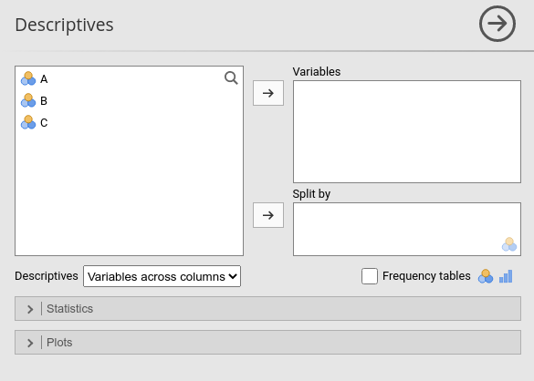

Chapter 2 Interface
Every jamovi command has a GUI which allows users to set up the analysis and toggle options. All active items in the input GUI are called Options. In the Descriptive analysis, the content of Variables field, Split by field, the toggle option Frequency Tables etc. are all option that we should define.

2.1 Options (.a.yaml)
Every control the user sees in the input panel of our analysis must be defined in the *.a.yaml file. An example is this, generated by the jamovi compiler default settings:
name: myRegression
title: Regression analysis
menuGroup: COOLj
version: '1.0.0'
jas: '1.2'
options:
- name: data
type: Data
- name: dep
title: Dependent Variable
type: Variable
- name: group
title: Grouping Variable
type: Variable
- name: alt
title: Alternative hypothesis
type: List
options:
- title: Not equal
name: notequal
- title: One greater
name: onegreater
- title: Two greater
name: twogreater
default: notequalEach option should have a name and a type. Depending to the type, other properties can be defined. For our purposes,
we need a Variable type to input the dependent variable and a Variables type to input independent variables, plus the Data type that will pass the spreadsheet data to the R package.
name: myRegression
title: Regression analysis
menuGroup: COOLj
version: '1.0.0'
jas: '1.2'
- name: data
type: Data
- name: dep
title: Dependent Variable
type: Variable
permitted:
- numeric
- name: covs
title: Covariates
type: Variables
suggested:
- continuous
- ordinal
permitted:
- numericFirst, notice the menuGroup property. That says in which menu the analysis will appear in jamovi. Because the COOLj menu
does not exist, the compiler will create one. Later we see how to put your module under pre-existing menus.
Now, the dep option will contain the dependent variable, and the property permitted allows the user to input only numerical variables (see appendix A) for more details about variables types in jamovi).
The covs option will contain the numeric independent variables, and the GUI will signal with little icons that the field expects
continuous or ordinal variable, ruled by the property suggested.
The complete list of options and their properties can be found at the jamovi hub
2.2 Layout (.u.yaml)
Next, we need to decide how to lay out the options in the GUI. The layout of the GUI is made of a series of LayoutBox, empty containers
that host the controls (the options) as their children. Our options are all numeric, so require an text input control named TextBox.
The layout is basically an HTML page, so one can think of a LayoutBox as a <div>, containing all the controls <input type="text">,<input type="checkbox"> etc.
For now, we set it like this:
---
title: Regression analysis
name: powerReg
jus: '3.0'
stage: 0
compilerMode: tame
children:
- type: LayoutBox
margin: large
children:
- type: TextBox
name: es
format: number
- type: TextBox
name: alpha
format: number
- type: TextBox
name: power
format: number
...Notice that we set compiler: to tame, because it tells the jamovi compiler not to override our layout.
2.3 Compiling the jamovi module
At this point we compile out module and see what happens.
jmvtools::install()If everything went as expected, you should see the COOLj module in jamovi. You do not need to restart jamovi, the compiler would restart the internal engine automatically and you should see the new module.


Now we have a scaffold to start programming the stats, so we can now use jmvScaffold.